GP Designer Desk documentation
Tint panel
Brush Color
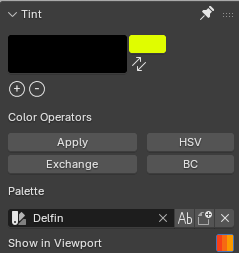
Color operators
Select strokes and change its color using different operators
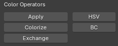
For all operators you will find options in the Adjust Last Operation panel in the left bottom corner of 3d View.
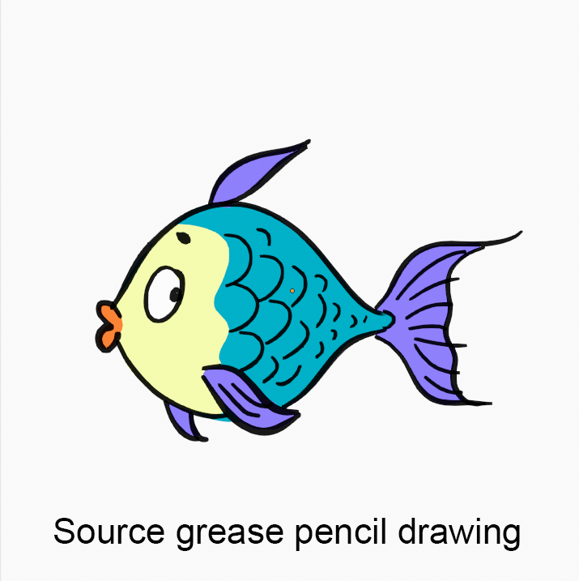
Apply
Simply applies current brush color onto selected strokes.
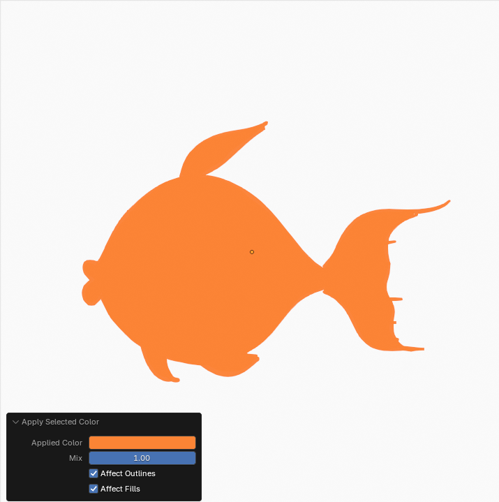
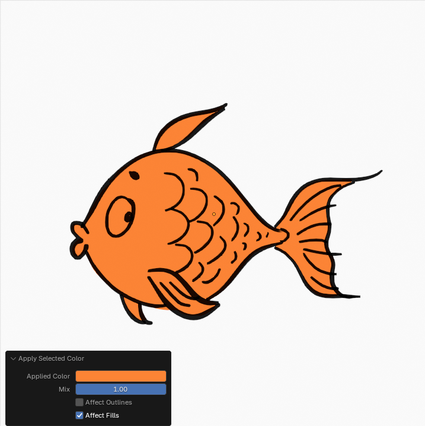
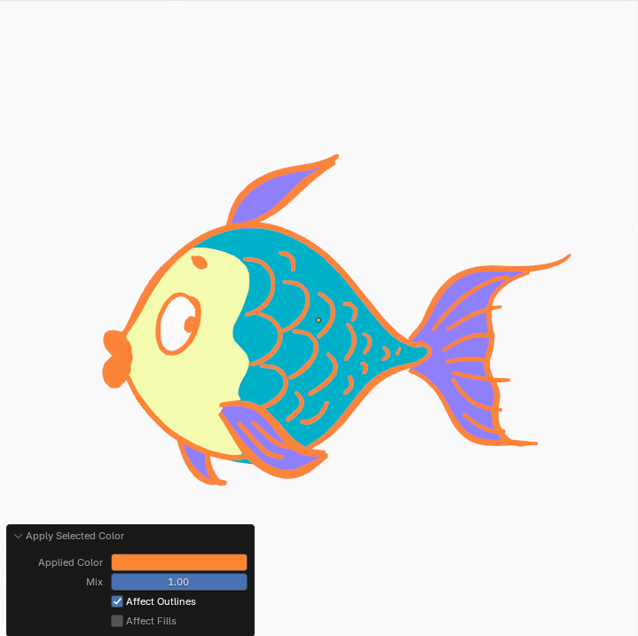
Colorize
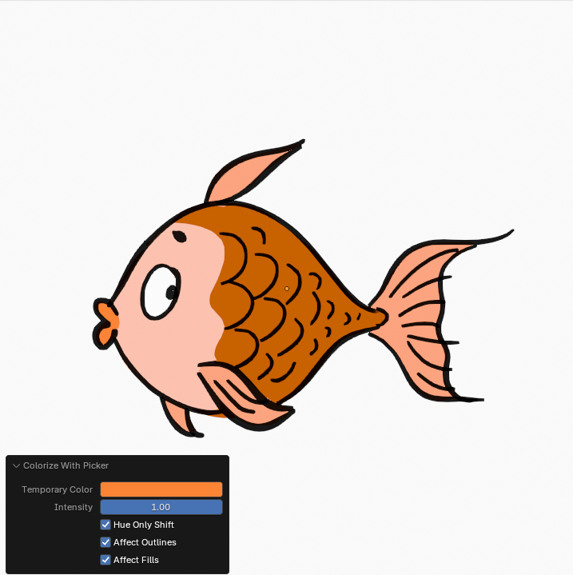
Exchange
Exchanges source color to target color
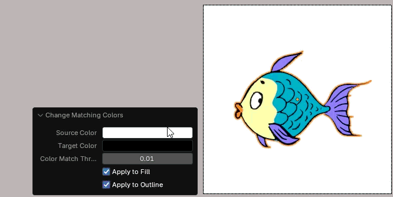
HSV (Hue Saturation Value)
Classic HSV sliders
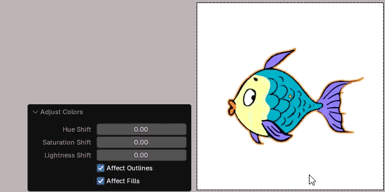
BC (Brightness Contrast)
Classic BC sliders
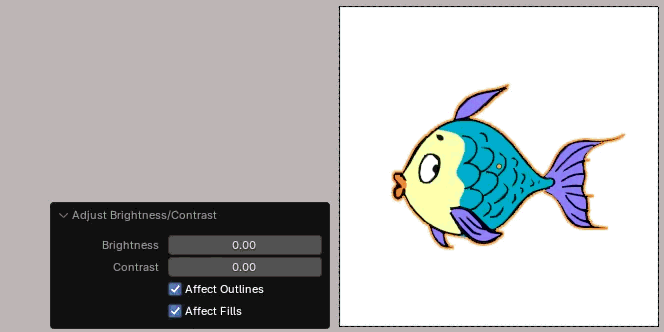
Palette options
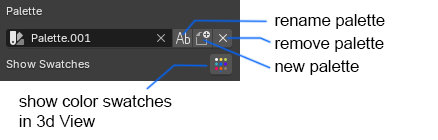
"New Palette" Popup
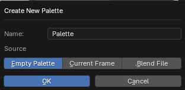
You can create new empty palette, create palette based on current visible grease pencil image or import any palette from other .blend file.
Show Swatches Button
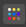
With this button you can switch on/off palette swatches in 3d ViewShape panel
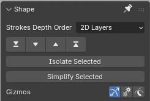